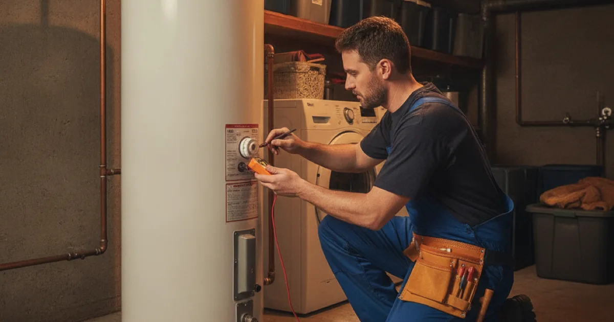

Hot Water System Repair in Westchester County, NY
No hot water, or not enough? Dan's Drains diagnoses and repairs water heaters fast, and gives you an honest call on whether a repair makes sense or a replacement is the smarter move.
- Licensed & Insured
- Same-Day Service Available
- Upfront Pricing
- 15+ Years Local Experience

Need a plumber in Westchester County? We can usually help the same day.
Signs Your Water Heater Needs Repair
Water heaters usually give warning signs before they quit. Watch for:
- Water that never gets hot enough, or runs out fast.
- Rusty or discolored hot water.
- Popping or rumbling sounds from the tank.
- Water pooling around the base of the heater.
Any of these is worth a look before you are left with a cold shower.
What Causes Water Heater Problems
Common culprits include sediment building up at the bottom of the tank, a failed heating element or thermostat, a bad gas valve, or simple old age. Hard water speeds up sediment, which is a frequent issue in this area.
We diagnose the actual cause instead of guessing, so the repair fixes the problem the first time.
Talk to a local Westchester County plumber today.
How We Repair a Water Heater
We test the unit to pinpoint the fault — element, thermostat, valve, or sediment — and replace or clean the failing part. Where sediment is the issue, flushing the tank often restores performance.
If the tank itself has failed, repair is not an option, and we will walk you through a straightforward replacement sized for your home rather than patching something that is done.
Repair or Replace?
The honest answer depends on age and what failed. A younger heater with a bad element is usually worth repairing. An older tank that is leaking or badly corroded is money better spent on a replacement.
The Department of Energy's water heating guide is a helpful reference on efficiency, and we give you a plain recommendation based on your specific unit — not a push to replace.
When to Call a Pro
Call us as soon as hot water gets unreliable. Catching a small fault early often means a simple repair instead of an emergency replacement in the middle of winter.
And if you notice water around the base of the tank, treat it as urgent — that can point toward a failing tank and possible water damage worth preventing.
Frequently Asked Questions
Why is my water not getting hot enough?
Common causes are a failed heating element or thermostat, sediment buildup, or a gas issue. We test to find the exact cause rather than replacing parts by guesswork.
Is a rumbling noise from my heater serious?
It usually means sediment has built up at the bottom of the tank. Flushing often quiets it and restores efficiency, though a very old tank may be near the end of its life.
Should I repair or replace my water heater?
If the unit is relatively young and a part failed, repair usually makes sense. If it is old, leaking, or corroded, replacement is the smarter spend. We give you an honest call either way.
Water is pooling under my heater — what now?
Treat it as urgent. A leaking tank can fail suddenly and cause water damage. Turn off the water supply to the heater if you can and call us right away.
Can regular maintenance prevent repairs?
Yes. Periodic flushing to remove sediment is the single best thing you can do to extend a water heater's life and avoid surprise failures.
Ready to book? Reach Dan’s Drains for fast, upfront plumbing help.